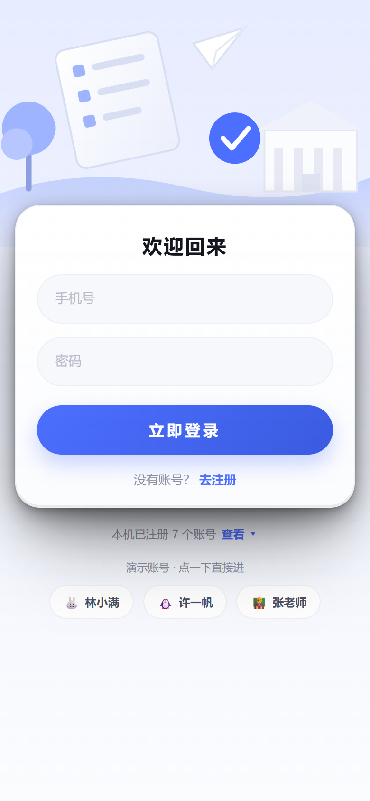
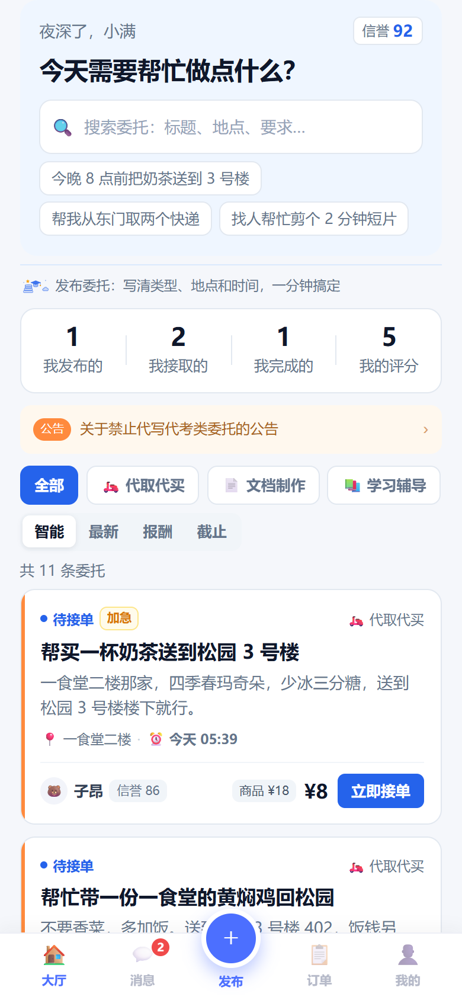
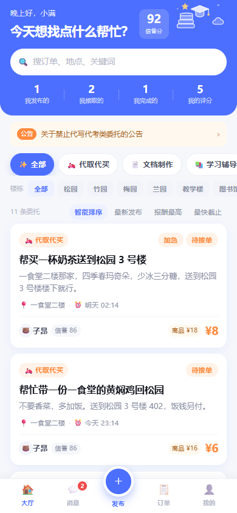
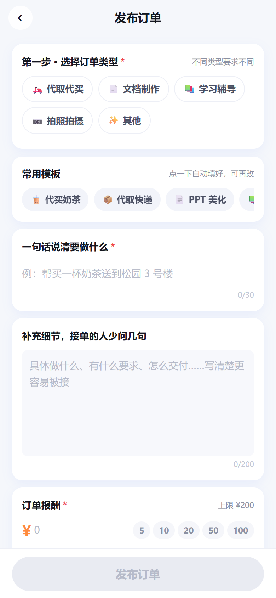
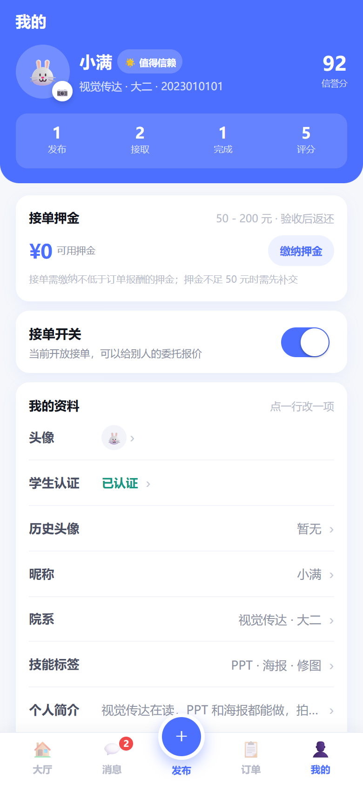
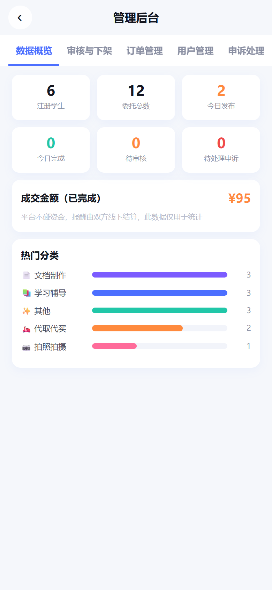

传智杯 · 作品介绍文档
面向校园的轻量任务委托平台 · 人机协作开发实践
「校园委托」是一个面向同一所学校学生的小额互助平台。校园里存在大量小额、即时、非标准的互助需求——代取快递、代买饭、文档排版、临时拍照、占座等。它们金额小、频次高、信任半径短，用通用跑腿平台既不划算也不安全。本项目把这类需求做成一个有押金、有信用、可仲裁的完整闭环。
平台只做小额订单（报酬上限 200 元），接单需缴纳不低于订单报酬的押金（上限 200 元），验收后返还；完成订单沉淀信誉分与评价。
发布委托自由接单缴纳押金交付验收评价 / 信用沉淀纠纷仲裁
覆盖「发单 → 接单 → 押金 → 交付 → 验收 → 评价 → 仲裁」全流程，含订单状态机、押金规则、信誉体系与管理后台，是一个能真实跑起来的业务系统。
通过自定义构建脚本把 HTML/CSS/JS 全部内联成单文件，双击即开、离线可运行，也可直接静态托管。
打开先显示本地缓存（秒开），同时拉取服务端数据覆盖；操作本地立即生效，300ms 后增量推送；每 4 秒比对版本号，变化则拉全量。
项目全程与 AI 协作完成，保留了细粒度的 Git 提交、Prompt 快照与技术文档，任何人可照着文档在 10 分钟内复现。
| 环节 | AI 的作用 |
|---|---|
| 需求拆解 | 把「导航动效参数」这类模糊描述，转成可执行的数值规范（ease-out、280ms、禁止弹跳等） |
| 核心模块生成 | 生成委托大厅（分类分区 + 滚动联动）、通用组件（委托卡/侧栏/底部导航）、数据层与同步层 |
| Bug 定位与修复 | 定位「发布页导航消失 / 卡死」的根因（缺组件 + 跳转锁未复位），并按根因修复 |
| 测试验证 | 用无头浏览器（Playwright）跑断言与截图，验证「指示条位移」「卡片悬停变换」「导航不卡死」等 |
项目用无头浏览器做自动化验收：脚本加载页面、模拟点击/滚动/悬停，断言关键 CSS 值与 DOM 状态（如指示条 translateX 是否等于目标标签偏移、发布页 tabbar 是否存在、按钮 position 是否为 static），并输出截图存档。AI 负责编写与迭代这些断言脚本，把「肉眼觉得对」变成「机器可验证」。
| 技术 | 说明 |
|---|---|
| uni-app + Vue 3 + Vite | 一套代码产出 H5 与小程序；Vite 提供快速构建 |
| 单文件内联构建 | build-single 关闭代码分割，把资源内联成单个 HTML，零依赖离线可跑 |
| 自研状态层 store.js | 内存状态 + 本地缓存，业务规则（押金、状态机、信誉）集中管理，响应式 dataTick 驱动刷新 |
| 本地优先同步 sync.js | 增量推送 + 版本号轮询，弱网可用、流量小 |
| Node 原生 http + JSON | 单进程同时提供接口与网页，数据存 data.json，写入先写临时文件再改名防损坏 |
| 订单状态机 / 押金规则 | 待接单→已接单→进行中→待验收→已完成/已取消；押金不低于报酬、上限 200 |
| CSS 动效体系 | 统一 ease-out + 280ms；滑动指示条、薄荷胶囊指示器、卡片上浮、按钮按下反馈 |






更多截图见作品包内 preview/ 目录。
本项目为首次参赛作品，此前未在公开平台发表，也未获得其他奖项。
本项目为原创开发，从零搭建，未基于其他开源项目二次开发。开发过程中参考了 uni-app 官方文档与通用 UI 设计规范，但代码与业务逻辑均为自主实现。
— 作品介绍文档结束 · 配套源码、技术文档、AI 协作记录与复现指南见作品包 —